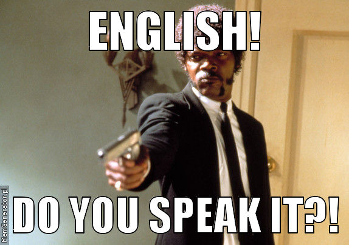

blog
There are 3 categories of software engineers:
1) Who blogged in the past but no longer does
2) Who is currently blogging
3) Who haven’t started yet but thought about it once or more
I fall in category 1) but also 3) since I once had a blog but it was more about testing out blogging frameworks and PaaS rather than focusing on good contents.
Why should you start blogging about tech?
Multiple reasons but overall for me sums up to:
1) “Logbook.” Do you recall that moment 3 months ago when you managed to accomplish that incredibly hard task at work? That crazy query? That magnificent bash script? That elegant recursive method to solve that problem?
Turns out, like often happens, you need it once more. Where was it? Ah right it’s there on git I can easily search it from git log, or was on the cloud notes? No wait was on a text file… [3 hours later] Ok I really wish I had it saved somewhere easily accessible and in clear and plain English + code.
2) “Learn more.” Everyone, has to keep their knowledge up to date continuously.
It’s a never-ending process for everyone in life but software engineers are challenged more by Moore’s Law with the pace of it. Writing posts forces me to learn, summarize and express a topic in a clear manner (or eventually face the ruthlessness of the internet).

3) “Help. Get to know people.” Help as many people as possible by writing about how I solve problems in my everyday life as an engineer and hear about their experiences; feedbacks, comments, etc.
If there is one thing I learned during my years in the field is that there is a tons of very similar problems we constantly solve over and over again (see StackOverflow) on our own.
4) “Look at my old posts and cringe.” Yup. You know the feeling of scrolling your Facebook timeline too far back in time, right?
We are all evolving as developers and as persons. Looking back is a good hint on what you have accomplished and where you are now. A sort of self-check assertion: “Am I still growing as a person and as an engineer?”

5) “English”. Applies only if your are not an English native speaker.
How long will my posts be?
I will focus on short-and-sweet kind of posts.
Conclusion
So! Get out there today and build your own blog as well!
My second post will show you how to create one with Github Pages and a simple Markdown to Html generator for free and at ease.
Did you like the post? Why not helping me by sharing on your favourite social platform?  Thanks!
Thanks!